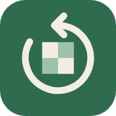

다시 두기
내가 놓친 장면을, 어디인지 모른 채 다시 둡니다.
- 1Chess.com 아이디만 넣으면 끝난 게임을 가져와요.
- 2이 폰에서 분석해 놓친 기회와 큰 실수를 찾아요.
- 3그 몇 수 전부터 봇과 다시 둬요. 끝나면 한 줄로 알려 줘요.
로그인 없음 · 기록은 이 폰에만 저장돼요
0장면 준비됨
최근에 둔 장면
원래 게임 흐름 · 탭하면 바로 시작
0:00
지난 수를 보는 중